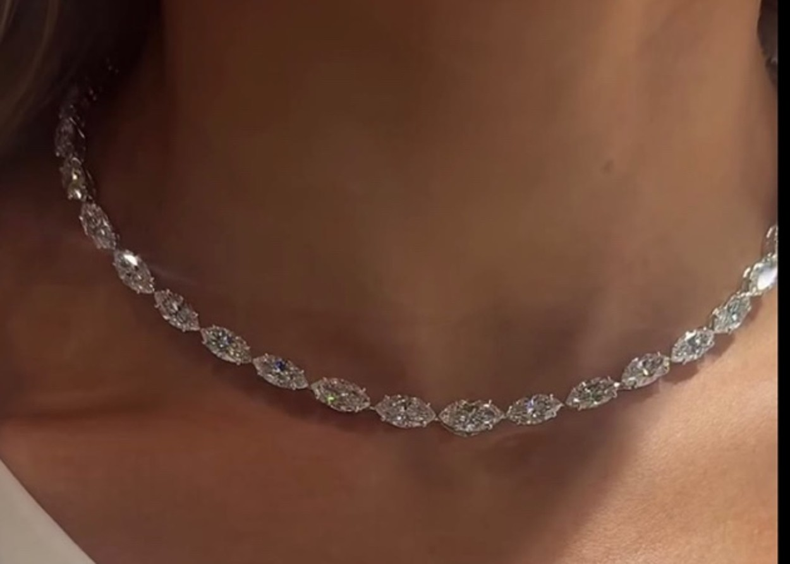
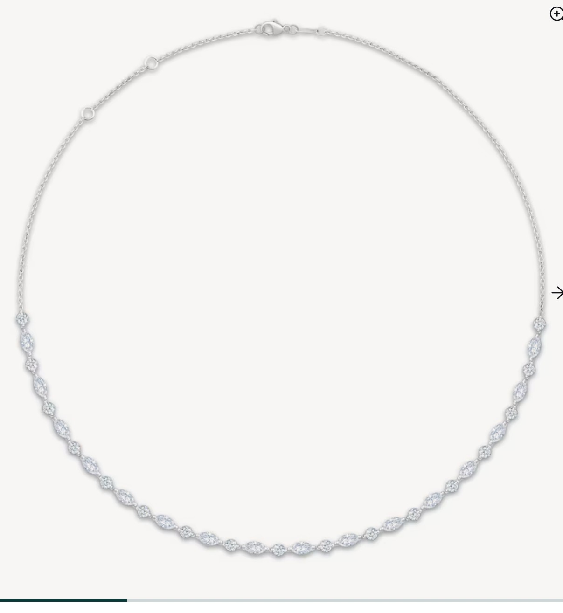

The Marquise Tennis Necklace
Searchable transcription of the November 2026 source. See the original for pagination, exact layout and exhibits.
RESEARCH REPORT / NOVEMBER 2026
Reddit group buys, actual purchase prices, photograph-based sizing, and an adjustable-chain custom design
A consolidated report of the entire discussion, with direct source links and explicit separation of documented facts, user-provided references, and tentative estimates.

REFERENCE A | The original inspiration image: near-continuous, horizontally oriented marquise-shaped elements resting near the collarbone.
EXECUTIVE SNAPSHOT
| Preferred aesthetic | Practical buying translation |
|---|---|
| Shape | East-west / horizontal marquise; individual linked stones, closely spaced |
| Visual size | Approximately 6 x 3 mm to 7 x 3.5 mm per element (photo-based estimate) |
| Fit | Around 15-16 in on the model; fit must be checked on the actual wearer |
| Latest design choice | Diamond-covered front + plain solid-gold adjustable chain back |
| Quote target | 15-18 in adjustable overall; about 7-9 in of front diamonds; 14K solid gold |
Key distinction: a full tennis necklace uses linked diamond settings around almost the entire circumference. A half-/partial-tennis necklace replaces the rear diamond section with a plain chain. The Kay example follows the latter construction, but alternates marquise and round diamonds rather than using only marquises.
1 What the original reference actually shows
The first photograph shows a slender, collarbone-hugging line of elongated, pointed-oval elements oriented horizontally and connected nearly tip-to-tip. The central portion forms a shallow V or curved drape; the diamonds appear similar in size instead of obviously graduated. The visible metal is silvery and the settings appear open and low-profile. These are observational descriptions, not verified product specifications.
Provisional visual measurements
| Feature | Working estimate | Confidence and caveat |
|---|---|---|
| Individual element length | 6-7 mm | Low to medium: no known scale in photo |
| Individual element height/width | 3-3.5 mm | Low to medium: relative to element length |
| Stone length-to-width ratio | Approximately 2:1 | Medium: shape proportions visible |
| Wearable length | 15-16 in on pictured model | Low: wearer neck size is unknown |
| Setting | Linked, low-profile prong-style | Low: setting details not sharp enough |
| Full-necklace carat weight | Prior estimate: ~12-19ctw for a 16-in full version | Very low: varies strongly with stone size, quantity, spacing and layout |
A material ambiguity remains: image sparkle and resolution do not conclusively prove that each leaf-shaped element is one marquise diamond. Some could be marquise-shaped clusters or illusion settings. A jeweler should be asked to quote both a single-marquise version and a cluster version only if the latter is actually desired.
2 Naming the style accurately
| Search/jeweler term | Meaning and whether it matches |
|---|---|
| East-west marquise tennis necklace | The long axis of each marquise runs with the necklace. Best match for the original image. |
| Horizontal marquise / tip-to-tip marquise | Useful synonym for the tightly linked pointed-oval look. |
| Full / continuous / all-around tennis necklace | Diamonds continue around most or all of the necklace; closest to original image. |
| Half-tennis / partial-tennis / semi-tennis necklace | Stone-set front and plain chain back; closest to the revised buying preference. |
| Adjustable cable-chain back / extender chain | Describes the plain back with multiple fastening positions; not the diamond shape. |
| Marquise-and-round mixed-cut necklace | Describes the Kay example, not the all-marquise image. |
| Marquise station necklace | Individual stones separated by chain; usually not the continuous reference look. |
| Marquise cluster or illusion tennis necklace | Similar leaf silhouettes made of several small stones per element; an alternative to check. |
3 Fit, length and the adjustable-chain decision
A necklace length cannot be measured reliably from a photograph: the same 16-in piece can sit above the collarbone on one wearer and higher on another. On this model the design appears close to the base of the neck, suggesting roughly 15-16 in. An 18-in chain normally hangs lower, though the actual fit depends on neck circumference, posture and where the diamond panel begins.
Recommended revised construction
• Total necklace length: adjustable from 15 to 18 in, with 16 in as the initial wearing target rather than a permanent fixed length.
• Diamond section: start with 7-9 in centered across the front, then ask for a 6-, 8- and 9-in visual/CAD comparison if the coverage is important.
• Back: fine, solid-gold cable chain on both sides with matching metal/color; secure lobster clasp and either 3-4 discrete jump rings or a properly rated sliding adjuster.
• Joins: symmetrical connection of the final marquise link to the chain; no abrupt size or weight change that lets the diamond panel twist.
• Confirm whether the chain and adjustment rings allow a true 15-in minimum or whether “18-in adjustable” means only 16-18 in; sellers use the phrase inconsistently.
Simple geometry: for a nominal 16-in necklace with 8 in of diamond-set front, approximately 8 in remains for rear chain and closure. At 18 in overall, approximately 10 in is rear chain. These are nominal linear lengths; CAD may adjust for clasps, link spacing and curvature.
Do not infer that “half tennis” always means half the circumference is diamond-covered. In one Provence Daisy group buy, the representative said the diamond panel was only 67 mm (about 2.64 in). Always state the diamond-front length explicitly. [R17]
4 The Kay adjustable-back reference

REFERENCE B | User-provided Kay screenshot. Notice that the sparkling front transitions to a plain rear cable chain with adjustment rings.
The pictured Kay item is the Neil Lane Artistry Certified Lab-Grown Diamond Necklace (14K white gold option, item 582162703). Kay describes alternating marquise- and round-cut lab-grown diamonds on half the necklace, an 18-in adjustable cable chain, and a lobster clasp. Specifications list 4ct total weight, F color, VS2 clarity, prong settings, listed maximum width 7.75 mm and height 3.1 mm. The user screenshot shows a $3,249.99 Black Friday sale against $4,999.99 (35% off); that promotion is time-sensitive. [R8, R20]
Why it matters: the metal chain reduces the amount of diamonds, allows a comfortable length adjustment, and offers a practical structural model to send to a manufacturer. Why it is not the same: the original inspiration uses only marquise-like elements, seemingly continuous around the neckline; Kay alternates marquise and round diamonds across only the front.
5 Stone-size benchmarks with published dimensions
Blue Nile offers standardized 18-in east-west marquise bezel necklaces that can calibrate scale, although the bezel construction and the 18-in length differ from the requested prong-set adjustable custom necklace. These are retail product specifications, not estimates from the photo. [R9-R11]
| Stone size | 18-in example | Stone count | How it would read visually |
|---|---|---|---|
| 4.4 x 2.2 mm | 7ctw | 80 | Delicate, fine marquise pattern |
| 6.1 x 3.05 mm | 15ctw | 62 | Closest to the working 6 x 3 mm estimate |
| 7.0 x 3.5 mm | 20ctw | 55 | Bolder, more substantial leaf-like links |
A separate Starsgem completed necklace used 5 x 2.5 mm marquise stones, approximately 19.5ctw at 16 in, in a slanted arrangement; its high total weight relative to the bezel examples reinforces that setting layout and counting conventions are important. It should not be treated as an interchangeable “6 x 3 mm” comparison. [R1-R2]
Setting and mechanical notes
• Request a clear front, back and side CAD with exact marquise dimensions, stone count, total diamond weight and net gold weight.
• Ensure pointed marquise ends are protected by appropriate prong or V-prong geometry; ask for no sharp points against skin.
• Ask for the link articulation range and a short video of the necklace being lifted and laid on a neckline form. Rigid or poorly balanced links can flip.
• Ask the maker to demonstrate how a 15-in and 18-in setting affects where the diamond front rests, rather than assuming it is centered in both.
• Request finished-piece videos in neutral white light and a clasp close-up before final payment or shipment.
6 Verified Reddit price benchmarks: purchased versus advertised
The most reliable figures are either buyer-reported completed purchases or specific vendor listings with explicit specifications. They are not comparable on price alone: year, gold karat, length, carat weight, design and retail markup vary.
| Case / status | Specifications | Reported amount |
|---|---|---|
| Starsgem Rose 2025 | delivered [R1-R2] | 16 in; ~19.5-20ctw; 5 x 2.5 mm slanted marquise; 10K yellow gold | $3,400 USD |
| Starsgem 2025 | delivered bracelet [R3] | 7 in; 58 marquises; 5 x 2.5 mm; ~8ctw (owner estimate); 10K white gold | Just under $1,600 USD |
| Hida Hitanda 2026 | buyer report [R4] | 21ctw marquise tennis necklace; 10K white gold | AUD $6,000 |
| AK Gems 2026 | seller asking price [R5] | Half-marquise necklace; 6.2ctw; 16.5g of 14K gold | $4,850 USD |
| TTB Jewelry 2026 | delivered bracelet [R6] | 6.5 in angled marquise; ~14-15ctw; 8 x 4 mm; 10K yellow gold | $4,500 USD before tax |
| Starsgem Tracy 2026 | delivered [R7] | 16 in; 2.5 mm round diamonds; 10K yellow gold; lightweight setting | $1,950 USD incl. shipping |
| Kuololit 2026 | buyer quote [R19] | 16 in; 2 mm 3-prong round diamond; yellow gold (user sought 14K) | $1,900 USD quoted |
| Kay retail 2026 | retailer [R8,R20] | 18 in adjustable; 4ctw mixed marquise+round; 14K white gold | $3,249.99 sale / $4,999.99 list |
Interpretation: the strongest historical all-marquise custom necklace reference is Starsgem Rose at approximately $3,400 for a delivered 16-in 10K-gold necklace. That is not a confirmed current 14K quote. The 21ct Australian-dollar example is not a USD price. The AK Gems figure is a seller offer, not evidence that a buyer paid that amount.
7 Reddit group-buy archive: closest offerings
| Seller / period | Product and posted range | Relevance / limitation |
|---|---|---|
| Provence Joyan | Oct 23-Nov 2, 2026 [R12] | Marquise + round mixed-cut bracelet; advertised from $882; 10K/14K/18K | A commenter requested a 16-in necklace. Prior discussion said this was possible, but no verified necklace price. |
| Julysnow | Jul 11-Aug 1, 2026 [R13] | Bracelet options include marquise, round and bezel; lab-diamond styles from $655; $35 worldwide shipping | Starting price is not confirmed for the marquise option; bracelet, not necklace. |
| Provence Liya | Mar 31-Apr 11, 2026 [R14] | Marquise station necklace; from $417; 10K/14K/18K | A spaced-station style, not tip-to-tip tennis. |
| Starsgem Lizzy | Jun 13-Jul 2, 2026 [R15] | Round-diamond tennis necklaces; 2.4-3.9 mm; $1,937-$6,582 | Useful labor, length and setting price context; not marquise. |
| Starsgem Demi | Aug 1-15, 2026 [R16] | Tennis necklaces across silver/10K/14K options; $930-$4,380 | Broad category starting price includes unlike materials and designs. |
| Provence Daisy | Jul 2-12, 2026 [R17] | Half-tennis necklace from $387; 2 mm stones; 67 mm gem panel | Proof of chain-back format; far shorter stone section than the proposed 7-9 in. |
| Fiorese | Oct 2026 wishlist [R18] | One user requested east-west marquise tennis necklace | Community interest only; no identified launched offer or price. |
As of this report date (15 November 2026), the dated group buys above had ended. It may still be possible to request a private custom quote, but archived sale prices do not imply the same pricing is currently offered.
8 What purchasers said about quality and usability
Delivered Starsgem experiences
The marquise necklace buyer reported receiving the 16-in Starsgem Rose piece after the earlier ~$3,400 order post. A separate 7-in marquise bracelet buyer said the design felt dainty but not fragile, and described sending reference images, reviewing CAD, and having revisions made before production. The bracelet buyer also said communications were clear despite the time-zone difference. These are individual customer accounts, not independent inspection or guarantees of future quality. [R1-R3]
Flipping and necklace balance
In Starsgem Demi’s 2026 group-buy comments, owners discussed whether tennis necklaces turn inward. One participant reported little flipping with a 2.4-mm necklace; others sought graduated designs. A seller claimed a tested graduated configuration did not flip, but the thread is not proof that every version will behave the same. For this custom design, link flexibility, distribution of stone weight and rear-chain weight deserve special attention. [R16]
Group buy mechanics
Group buys usually offer a preset design and time-limited price, often with metal, length and stone choices. Custom changes can move an order outside the group rate. A quoted “from” amount can refer to the cheapest stone, shortest item or least expensive metal. Avoid comparing it directly to an 8-in marquise diamond front in 14K gold.
9 Two manufacturer-ready specifications
OPTION A | CLOSEST TO ORIGINAL REFERENCE
| Component | Proposed specification |
|---|---|
| Design | Full or near-full, east-west marquise lab-diamond tennis necklace; stones closely linked tip-to-tip. |
| Length | Start with fixed 16 in, plus fit illustration at 15 and 17 in. |
| Stones | Quote 6 x 3 mm and 7 x 3.5 mm; request actual count and ctw for each. |
| Setting | Low-profile, articulated, protective prong-style setting; discuss all-marquise vs illusion cluster if necessary. |
| Metal | Solid 14K white gold and 14K yellow gold quoted separately. |
| Inspection | Front, back, side CAD; on-neck simulation; anti-flip video; exact gold/diamond weight. |
OPTION B | PREFERRED ADJUSTABLE-CHAIN REDESIGN
| Component | Proposed specification |
|---|---|
| Design | Half-/partial-tennis necklace: all-marquise east-west diamond section on the front, plain cable chain at back. |
| Coverage | 7-9 in of continuous marquise diamond links (quote 7 and 8 in first). |
| Total length | Adjustable 15, 16, 17 and 18 in if possible; show where adjustment rings sit. |
| Stone sizes | 6 x 3 mm primary; 5 x 2.5 mm economical alternative; 7 x 3.5 mm statement alternative. |
| Metal | Solid 14K white or yellow gold, including chain, adjustment rings and clasp. |
| Closure | Lobster clasp + several fixed jump rings, or a sliding bead designed for this necklace weight. |
| Priority checks | Symmetry; smooth transition to chain; no flipping; clasp security; panel centering at shortest/longest lengths. |
Earlier discussion suggested a possible 40-55% saving in diamond usage compared with an all-around necklace. This was only a rough visual/coverage intuition, NOT a verified price reduction. An 8-in front represents 50% of a 16-in nominal length, but the finished price includes labor, gold, hardware and stone-setting minimums and cannot be scaled linearly.
10 Search phrases and ready-to-send RFQ
GOOGLE / ETSY / ALIBABA / REDDIT SEARCHES
• 16 inch east west horizontal marquise lab grown diamond tennis necklace 6x3mm 14k white gold full eternity continuous prong set
• 14k gold east west marquise lab grown diamond half tennis necklace adjustable chain back 15 18 inches
• horizontal marquise diamond leaf motif necklace near tip to tip low profile articulated links
• marquise diamond cluster illusion half tennis necklace adjustable cable chain
• site:reddit.com/r/LabGroupSales marquise tennis necklace group buy
• site:reddit.com/r/labdiamond marquise tennis necklace Starsgem Provence price
COPY-READY MANUFACTURER INQUIRY
Hello, I am interested in a custom partial tennis necklace based on the attached reference photographs. I want a continuous front section of horizontal/east-west marquise lab-grown diamonds, not alternating round stones. Please quote solid 14K white gold and 14K yellow gold separately. My starting preference is 6 x 3 mm marquise diamonds, about 8 inches of diamond-covered front, with a plain solid-gold cable-chain back adjustable from 15 to 18 inches using a secure lobster clasp and multiple adjustment rings. Please also quote 5 x 2.5 mm and 7 x 3.5 mm stone options, and 7-inch versus 9-inch diamond fronts. For each option please provide number of stones, total carat weight, color/clarity range, net gold weight, CAD and fee, production time, shipping cost, payment terms, and a front/back/side view showing link articulation and clasp. Please confirm whether stones are individual marquise diamonds (not clusters), whether the necklace resists flipping, and whether the diamond section stays centered at the shortest and longest settings. Thank you.
11 Quote-comparison and prepayment checklist
• Compare like with like: same total adjustable length, the SAME front-panel length, stone dimensions, total ctw, gold karat and metal color.
• Request a stone-count breakdown and clarify whether “width” means the marquise long dimension (6 mm) or the vertical height across the neckline (3 mm).
• Ask the vendor to identify whether it is actual marquise-cut stones or small round diamonds arranged in marquise-shaped clusters.
• Request a detailed CAD showing stone seats, protective prongs, chain thickness/gauge and where the clasp hooks for every adjustable length.
• Confirm net gold weight separately from stone weight; ask for an itemized total and any CAD, shipping or insurance charges.
• Request production photographs and an articulated movement video before balance payment; verify secure prongs and an even pattern.
• For any older Reddit group buy, obtain a new dated quote and explicit eligibility for any group rate; do not assume archived promotional pricing.
• If a seller offers stone-quality grades or certification claims, ask what is actually documented for small melee stones and what paperwork is provided with the finished piece.
12 Overall findings
The original aesthetic is a refined, closely spaced horizontal marquise necklace, probably around 6 x 3 mm per visible leaf-like element, worn high at the collarbone. The most useful historic direct-manufacturer comparison is Starsgem Rose’s delivered 16-in, ~19.5ctw, 5 x 2.5 mm marquise necklace in 10K gold at approximately $3,400 in 2025. That price should be treated as a historic example, not a current 14K offer. [R1-R2]
The design evolved during the discussion: a partial tennis necklace with diamonds across the front and a plain adjustable chain at the back is the most flexible purchasing brief. The Kay 4ct marquise-and-round necklace is a real example of that construction, and the Provence Daisy thread demonstrates why the length of the diamond panel must be explicitly specified. [R8,R17]
The next concrete action is to send both user reference photos and Option B to Starsgem, Provence and Fiorese, requiring two or three matched quotes per vendor. The decisive variables are diamond-front length, stone size, effective minimum necklace length, diamond count/ctw, and resistance to flipping—not an isolated “price from” group-buy figure.
Source register | Clickable primary references
Source codes in square brackets throughout this report refer to the following linked posts and product pages. Reddit prices are self-reported unless otherwise stated; retail prices can change without notice.
[R1] Starsgem Rose - delivered marquise tennis necklace — May 20, 2025 | buyer delivery post
[R2] Same buyer - $3,400 pre-delivery order disclosure — April 2025 | comment in separate thread
[R3] Starsgem - completed marquise tennis bracelet — April 25, 2025 | delivered bracelet and price in comments
[R4] Hida Hitanda - 21ct marquise necklace — October 2026 | buyer comment, Australian-dollar price
[R5] AK Gems - half-marquise necklace — 2026 | seller in-stock asking price, not completed sale
[R6] TTB Jewelry - angled marquise bracelet — June 19, 2026 | buyer-reported completed purchase
[R7] Starsgem Tracy - round-diamond necklace received — April 23, 2026 | buyer-reported price and delivery
[R8] Kay Neil Lane Artistry - 4ct half necklace — Retail product details, white gold configuration
[R9] Blue Nile - 7ct east-west marquise necklace — 18 in | 80 stones | 4.4 x 2.2 mm | bezel
[R10] Blue Nile - 15ct east-west marquise necklace — 18 in | 62 stones | 6.1 x 3.05 mm | bezel
[R11] Blue Nile - 20ct east-west marquise necklace — 18 in | 55 stones | 7.0 x 3.5 mm | bezel
[R12] Provence Joyan - marquise + round bracelet group buy — Oct 23-Nov 2, 2026 | necklace request in thread
[R13] Julysnow - multi-style tennis bracelet group buy — July-August 2026 | includes marquise style
[R14] Provence Liya - marquise station necklace group buy — March 31-April 11, 2026 | from $417
[R15] Starsgem Lizzy - round tennis necklace group buy — June 13-July 2, 2026 | $1,937-$6,582
[R16] Starsgem Demi - tennis necklace group buy — Aug 1-15, 2026 | $930-$4,380 across variants
[R17] Provence Daisy - short-panel half-tennis group buy — July 2-12, 2026 | stones cover 67 mm
[R18] Fiorese - group-buy wishlist — October 2026 | east-west marquise necklace requested
[R19] Kuololit - $1,900 round-diamond necklace quote — February 24, 2026 | potential price comparison
[R20] Kay Neil Lane Artistry listing - sale price — November 2026 | Kay collection listing and user screenshot